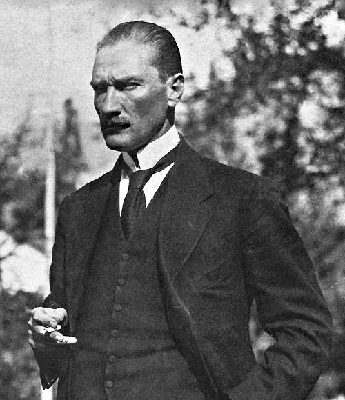
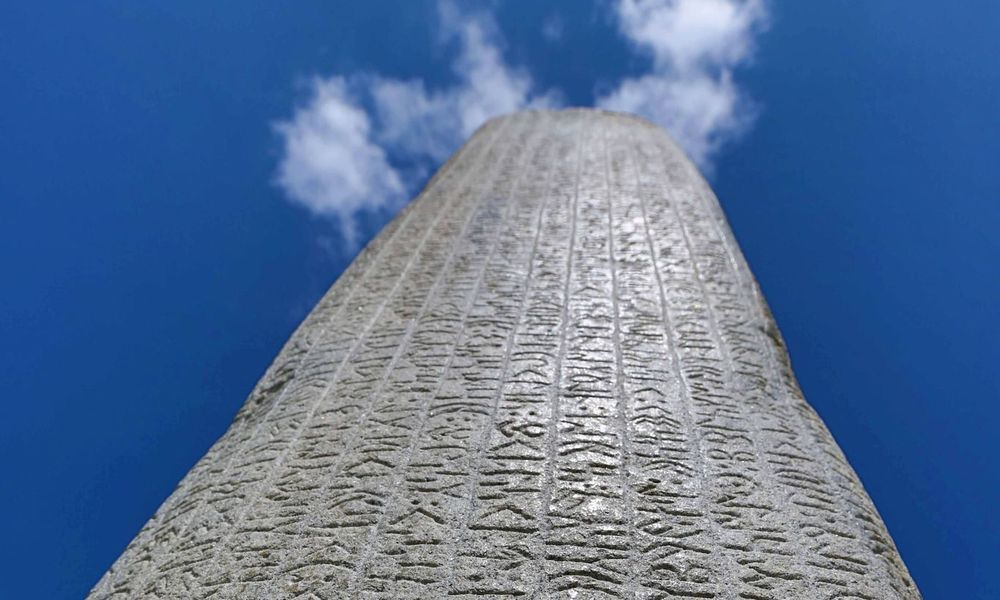

Atatürk
Öğretmenler; Yeni nesli, Cumhuriyetin fedakâr öğretmen ve eğitimcilerini, sizler yetiştireceksiniz ve yeni nesil, sizin eseriniz olacaktır…
Mustafa Kemal ATATÜRK
Düşüncelerim

Türk Dili
Ülkesini, yüksek istiklalini korumasını bilen Türk milleti, dilini de yabancı diller boyunduruğundan kurtarmalıdır.
Mustafa Kemal ATATÜRK
Düşüncelerim
Türk Dünyası
Deme bana Oğuz, Kayı, Osmanlı. Türk'üm,bu ad her ünvandan üstündür. Yoktur Özbek, Nogay, Kırgız, Kazanlı. Türk Milleti bölünmez bir bütündür.
Ziya GÖKALP
Düşüncelerim